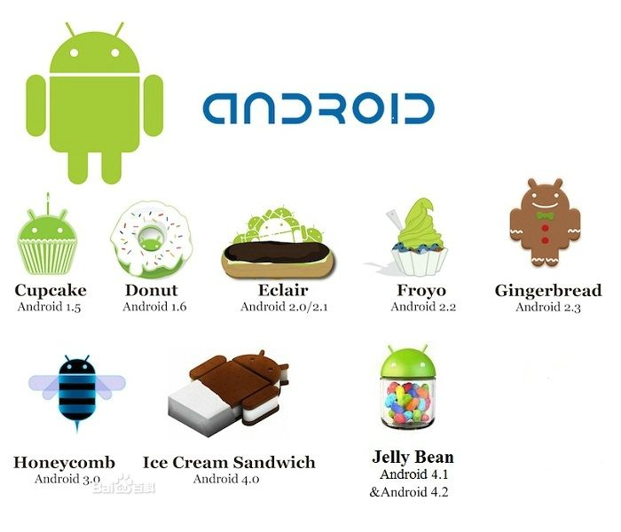

Android概述
Android是一种基于Linux的自由及开放源代码的操作系统，主要使用于移动设备，如智能手机和平板电脑，由Google公司和开放手机联盟领导及开发。尚未有统一中文名称，中国大陆地区较多人使用“安卓”或“安致”。
Android操作系统最初由Andy Rubin开发，主要支持手机。2005年8月由Google收购注资。2007年11月，Google与84家硬件制造商、软件开发商及电信营运商组建开放手机联盟共同研发改良Android系统。随后Google以Apache开源许可证的授权方式，发布了Android的源代码。第一部Android智能手机发布于2008年10月。Android逐渐扩展到平板电脑及其他领域上，如电视、数码相机、游戏机等。2011年第一季度，Android在全球的市场份额首次超过塞班系统，跃居全球第一。 2012年11月数据显示，Android占据全球智能手机操作系统市场76%的份额，中国市场占有率为90%。2013年09月24日谷歌开发的操作系统Android在迎来了5岁生日，全世界采用这款系统的设备数量已经达到10亿台。
发展历程
2003年10月，Andy Rubin等人创建Android公司，并组建Android团队。
2005年8月17日，Google低调收购了成立仅22个月的高科技企业Android及其团队。安迪鲁宾成为Google公司工程部副总裁，继续负责Android项目。
2007年11月5日，谷歌公司正式向外界展示了这款名为Android的操作系统，并且在这天谷歌宣布建立一个全球性的联盟组织，该组织由34家手机制造商、软件开发商、电信运营商以及芯片制造商共同组成，并与84家硬件制造商、软件开发商及电信营运商组成开放手持设备联盟（Open Handset Alliance）来共同研发改良Android系统，这一联盟将支持谷歌发布的手机操作系统以及应用软件，Google以Apache免费开源许可证的授权方式，发布了Android的源代码。
2008年，在GoogleI/O大会上，谷歌提出了AndroidHAL架构图，在同年8月18号，Android获得了美国联邦通信委员会（FCC）的批准，在2008年9月，谷歌正式发布了Android 1.0系统，这也是Android系统最早的版本。
2009年4月，谷歌正式推出了Android 1.5这款手机，从Android 1.5版本开始，谷歌开始将Android的版本以甜品的名字命名，Android 1.5命名为Cupcake（纸杯蛋糕）。该系统与Android 1.0相比有了很大的改进。
2009年9月份，谷歌发布了Android 1.6的正式版，并且推出了搭载Android 1.6正式版的手机HTC Hero（G3），凭借着出色的外观设计以及全新的Android 1.6操作系统，HTC Hero（G3）成为当时全球最受欢迎的手机。Android 1.6也有一个有趣的甜品名称，它被称为Donut（甜甜圈）。
2010年2月份，Linux内核开发者Greg Kroah-Hartman将Android的驱动程序从Linux内核“状态树”（“staging tree”）上除去，从此，Android与Linux开发主流将分道扬镳。在同年5月份，谷歌正式发布了Android2.2操作系统。谷歌将Android2.2操作系统命名为Froyo，翻译完名为冻酸奶。
2010年10月份，谷歌宣布Android系统达到了第一个里程碑，即电子市场上获得官方数字认证的Android应用数量已经达到了10万个，Android系统的应用增长非常迅速。在2010年12月，谷歌正式发布了Android 2.3操作系统Gingerbread （姜饼）。
2011年1月，谷歌称每日的Android设备新用户数量达到了30万部，到2011年7月，这个数字增长到55万部，而Android系统设备的用户总数达到了1.35亿，Android系统已经成为智能手机领域占有量最高的系统。
2011年8月2日，Android手机已占据全球智能机市场48%的份额，并在亚太地区市场占据统治地位，终结了Symbian（塞班系统）的霸主地位，跃居全球第一。
2011年9月份，Android系统的应用数目已经达到了48万，而在智能手机市场，Android系统的占有率已经达到了43%。继续在排在移动操作系统首位。谷歌将会发布全新的Android 4.0操作系统，这款系统被谷歌命名为Ice Cream Sandwich（冰激凌三明治）。
2012年1月6日，谷歌Android Market已有10万开发者推出超过40万活跃的应用，大多数的应用程序为免费。Android Market应用程序商店目录在新年首周周末突破40万基准，距离突破30万应用仅4个月。在2011年早些时候，Android Market从20万增加到30万应用也花了四个月。
发行版本
Android在正式发行之前，最开始拥有两个内部测试版本，并且以著名的机器人名称来对其进行命名，它们分别是：阿童木（AndroidBeta），发条机器人（Android 1.0）。后来由于涉及到版权问题，谷歌将其命名规则变更为用甜点作为它们系统版本的代号的命名方法。甜点命名法开始于Android 1.5发布的时候。作为每个版本代表的甜点的尺寸越变越大，然后按照26个字母数序：纸杯蛋糕（Android 1.5），甜甜圈（Android 1.6），松饼（Android 2.0/2.1），冻酸奶（Android 2.2），姜饼（Android 2.3），蜂巢（Android 3.0），冰激凌三明治（Android 4.0），果冻豆（Jelly Bean，Android4.1和Android 4.2）。

1.1
2008年9月发布的Android第一版。
1.5
Cupcake（纸杯蛋糕）：2009年4月30日发布。
主要的更新如下：
拍摄/播放影片，并支持上传到Youtube；支持立体声蓝牙耳机，同时改善自动配对性能；最新的采用WebKit技术的浏览器，支持复制/贴上和页面中搜索；GPS性能大大提高；提供屏幕虚拟键盘；主屏幕增加音乐播放器和相框widgets；应用程序自动随着手机旋转；短信、Gmail、日历，浏览器的用户接口大幅改进，如Gmail可以批量删除邮件；相机启动速度加快，拍摄图片可以直接上传到Picasa；来电照片显示。
1.6
Donut（甜甜圈）：2009年9月15日发布。
主要的更新如下：
重新设计的Android Market手势；支持CDMA网络；文字转语音系统（Text-to-Speech）；快速搜索框；全新的拍照接口；查看应用程序耗电；支持虚拟私人网络（VPN）；支持更多的屏幕分辨率；支持OpenCore2媒体引擎；新增面向视觉或听觉困难人群的易用性插件。
2.0
2009年10月26日发布。
主要的更新如下：
优化硬件速度；"Car Home"程序；支持更多的屏幕分辨率；改良的用户界面；新的浏览器的用户接口和支持HTML5；新的联系人名单；更好的白色/黑色背景比率；改进Google Maps3.1.2；支持Microsoft Exchange；支持内置相机闪光灯；支持数码变焦；改进的虚拟键盘；支持蓝牙2.1；支持动态桌面的设计。
Android 2.2/2.2.1 Froyo（冻酸奶） ：2010年5月20日发布。主要的更新如下：
整体性能大幅度的提升；3G网络共享功能；Flash的支持；App2sd功能；全新的软件商店；更多的Web应用API接口的开发。
2.3.x
Gingerbread（姜饼） ：2010年12月7日发布。
主要的更新如下：
增加了新的垃圾回收和优化处理事件；原生代码可直接存取输入和感应器事件、EGL/OpenGLES、OpenSL ES；新的管理窗口和生命周期的框架；支持VP8和WebM视频格式，提供AAC和AMR宽频编码，提供了新的音频效果器；支持前置摄像头、SIP/VOIP和NFC（近场通讯）；简化界面、速度提升；更快更直观的文字输入；一键文字选择和复制/粘帖；改进的电源管理系统；新的应用管理方式。
3.0
Honeycomb（蜂巢）：2011年2月2日发布。
主要更新如下：
优化针对平板 ；全新设计的UI增强网页浏览功能 ；n-app purchases功能。
3.1
Honeycomb（蜂巢） ：2011年5月11日布发布。
版本主要更新如下：
经过优化的Gmail电子邮箱 ；全面支持Google Maps ；将Android手机系统跟平板系统再次合并从而方便开发者；任务管理器可滚动，支持USB输入设备（键盘、鼠标等） ；支持Google TV.可以支持XBOX 360无线手柄；widget支持的变化，能更加容易的定制屏幕widget插件。
3.2
Honeycomb（蜂巢）：2011年7月13日发布。
版本更新如下：
支持7英寸设备；引入了应用显示缩放功能。
4.0
Ice Cream Sandwich（冰激凌三明治）：2011年10月19日在香港发布。
版本主要更新如下：
全新的UI；全新的Chrome Lite浏览器，有离线阅读，16标签页，隐身浏览模式等；截图功能；更强大的图片编辑功能；自带照片应用堪比Instagram，可以加滤镜、加相框，进行360度全景拍摄，照片还能根据地点来排序；Gmail加入手势、离线搜索功能，UI更强大；新功能People：以联系人照片为核心，界面偏重滑动而非点击，集成了Twitter、Linkedin、Google+等通讯工具。有望支持用户自定义添加第三方服务；新增流量管理工具，可具体查看每个应用产生的流量，限制使用流量，到达设置标准后自动断开网络。
Android 4.1Jelly Bean（果冻豆）:2012年6月28日
新特性：
更快、更流畅、更灵敏；特效动画的帧速提高至60fps，增加了三倍缓冲；增强通知栏；全新搜索；搜索将会带来全新的UI、智能语音搜索和Google Now三项新功能；桌面插件自动调整大小；加强无障碍操作；语言和输入法扩展；新的输入类型和功能；新的连接类型。
Android 4.2Jelly Bean（果冻豆）:2012年10月30日
Android 4.2沿用“果冻豆”这一名称，以反映这种最新操作系统与Android 4.1的相似性，但Android 4.2推出了一些重大的新特性，具体如下：
Photo Sphere全景拍照功能；键盘手势输入功能；改进锁屏功能，包括锁屏状态下支持桌面挂件和直接打开照相功能等；可扩展通知，允许用户直接打开应用；Gmail邮件可缩放显示；Daydream屏幕保护程序；用户连点三次可放大整个显示频，还可用两根手指进行旋转和缩放显示，以及专为盲人用户设计的语音输出和手势模式导航功能等；支持Miracast无线显示共享功能；Google Now现可允许用户使用Gamail作为新的数据来源，如改进后的航班追踪功能、酒店和餐厅预订功能以及音乐和电影推荐功能等。
Android 4.4KitKat（奇巧巧克力）: 待定
2013年9月4日凌晨，谷歌对外公布了Android新版本Android 4.4KitKat（奇巧巧克力），而并非早前传闻已久的Android5.0Key Lime Pie(酸橙派)，目前并安卓4.4 KitKat具体的上线时间并没有公布。